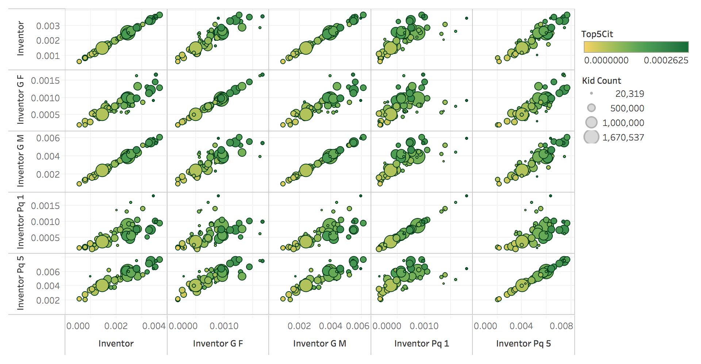

Beta Prototype
Innovation Rates based on Parent Quintile, Gender, and Childhood State of Residence
Question
What patterns can be found amongst innovation rates based on parent quintile, gender, and state of residence during childhood? Which of these has the greatest impact?
Encoding
This visualization is a scatter-plot matrix comparing innovation rates based on different variables, and seeing how they compare. The x and y axis encode the percentage of inventors based on different factors. Color encodes the percentage of children with patent citations in the top 5% of their birth cohort. Size encodes the number of children overall. Each point represents one state.
Dataset Used:
Origins of Inventors: Innovation Rates by Childhood State, Gender, and Parent Income
Columns:
- inventor: share of children who go on to become inventors
- inventor_g_m: same as inventor but restricted to males
- inventor_g_f: same as inventor but restricted to females
- inventor_pq_1:same as inventor but restricted to children whose parental income is in quintile 1 of the parent income distribution of the children's birth cohort
- inventor_pq_5:same as inventor but restricted to children whose parental income is in quintile 5 of the parent income distribution of the children's birth cohort
- top5cit: share of children with patent citations in top 5% of their birth cohort, using total number of citations
- kid_count: number of children
Planned Interactivity
The final visuzalization will include details-on-demand to show specific percentages for each point, as well as basic highlighting and raising when a point is hovered over. There will be brushing to highlight different groups of points in different matrix plots to see how points compare against different variables. There will also be filtering by state to show different sub-groups of data at a time.
I plan to also include at least one other visualization to supplement this one, and for that I plan to make a choropleth map using the Careers of Inventors: Innovation Rates by Current State, Gender, Year of Birth, and Age dataset to look at patterns among adults, to examine how childhood can inform opportunites into adulthood. The two visualizations will ideally be linked as well by state.
Prototype

Chaitrika Budamagunta
Who Becomes an Inventor in America? The Importance of Exposure to Innovation
Source: https://opportunityinsights.org/paper/losteinsteins/
Answer